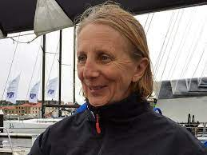
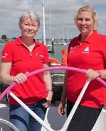

Wake up, check the clock, sit up, drag laptop onto duvet, open it up, find the file, check the word count and write it down.
{kind=link}
63762 this morning. It’ll need to be 64+++ by tomorrow. 64762 I hear you say - well no, not every day. Anything beyond 64000 will do. There’s a cheating get out clause whereby as long as the first two numbers have changed there’s a little less stress about the others. Okay that’s not so admirable but there has to be a little bit of slack in the system, doesn’t there?
If I was offshore racing and suggested a little bit of slack in the system, the answer from any serious competitor would be a shocked NO! I’ve recently been reading the section of Tracy Edwards' autobiography Living Every Second where she and legendary navigator Adrienne Cahalan made their 1998 attempt at the Jules Verne Trophy. That’s the prize for the fastest circumnavigation of the world by any type of sailing yacht. The starting line is between Ushant and the Lizard and the course involves leaving the capes of Good Hope, Leeuwin and Horn to port, then recrossing the start line from the opposite direction. The current holder is Francis Joyon in 40 days, 23 hours, 30 mins, 30 seconds in 2016. Most record holders have been French though in 1994 Robin Knox Johnston and Peter Blake took the trophy in 74 days, 22 hours, 17 minutes, 22 seconds. That amount of speed difference over twenty years feels almost like quill pen v predictive text.
When Tracy took on the challenge, the record holder was Olivier de Kersauson who had achieved 71 days 13 hours 59 minutes 46 seconds in 1997. He had set the record in a trimaran which he proclaimed unbeatable. Tracy, Adrienne, Miki von Koskull, Helena Davelid, Emma Westmacott, Samantha Davis, Frederique Brule, Emma Richards, Sharon Ferris, Hannah Harwood, Miranda Merrou were sailing the same maxi catamaran used by Knox Johnston and Blake (renamed of course by their sponsors). Tracy describes the record attempt as being like sailing a phantom race against ghost ships – the previous record holders. There was no let up. In that cutting edge, high-tech sailing environment speed / distance predictions & comparisons were ever present. Every hour (every minute possibly) they could know how they were doing relative to Kersauson at that same point. An unremitting challenge. When they were finally dismasted off the coast of Chile and knew that their challenge had failed they were bruised, exhausted , in the depths of despond. Tracy thought about her hero, Ernest Shakleton, as he failed to reach the South Pole leaving time for Amundsen to claim victory -- and for Scott's entire team to die.
She said to Adrienne, ‘You know we have to do this again?’
'Yes I know.'
'Bummer, isn’t it?’
'Yeah.'
Tracy's pregnancy sent her life in a different direction but Adrienne made many other speed attempts and continued to race hard. She told a later crew, who were struggling against exhaustion; 'If you don’t try now and we lose
the world record by one second you will never forgive yourself, but if you put
everything into it then you know you have done what could be done to complete
it.'
 |
| Adrienne Cahalan entering a Sydney-Hobart race (Aloat.ie) |
{kind=link}
If I were writing a homily to myself (maybe I am) this would surely be all I need to stiffen resolve and allow no slippage from the daily target, condone no little mental wriggle-rounds like telling myself that as long as the first two numbers of the thousand a day have changed that’s acceptable. Try a feeble line like that on Adrienne Cahalan! Yet there are days at sea when the wind doesn’t blow or blows too hard, the spinnaker tears, the steering gear jams. There are days when Golden Duck books must be packed, Covid Inquiry sessions attended, blogs written. Days when I have to tell myself ‘I can only do what I can do’.
I’m running two private invisible races as I try to get the first draft of this book complete by the spring. I’m racing against Tracy Edward’s slim and stripped-out original yacht Maiden in the current Ocean Globe Race – predicted to be back in Southampton by the middle of April – and my daughter Georgeanna’s first baby on course for the end of May. The first one's optional: the second vital. Both are great motivators for a book that's about women, especially women sailing. It's called That Spirit of Independence.
Georgeanna gave Francis a mug: 'and I will write 500 words and I will write 500 more'. It takes me back to a great moment in a 2017 dementia conference in Hamilton where a Scottish dementia choir sung this Proclaimers song to the accompaniment of singing, stamping and clapping from all of us in the rest of the room. Dementia, tragically, is a race in reverse. It starts with a few words, memories, capabilities going and the brain tries its desperate best to slow the regression. I was at another dementia conference in Gateshead recently when a consultant psychiatrist made an eloquent plea for all of us, in advance, to all we can to help our brains in the likely struggle to come, by living more healthily now. Already I feel some words slipping from me. Usually it’s proper nouns but sometimes much more ordinary nouns. This week it was gnocchi. I find myself wondering whether it’s a last-in first-out system, 'Gnocchi' is a relatively recent word in my vocabulary: will 'dumpling' last longer?
There isn’t much Georgeanna can do to keep the brain cells
of her small person evolving and increasing (apart from healthy eating and sensible life style) but I've no doubt that the Maiden crew, led by
skipper Heather Thomas (yes I had to look up her surname) will be following the Adrienne Cahalan Don’t Waste A Single Second approach. They'll be competing against themselves (concentration,
exhaustion, breakages) as well as the
other boats in the race.
 |
| Tracy Edwards & Heather Thomas (The Maiden Factor) |
{kind=link}
Bertie has devised his own 500 kilometre challenge for December. He calculates that the month has 500 hours of darkness, therefore he has set himself to run or walk 500 kilometres (mostly in the dark) to raise money for Crisis at Christmas. Kilometres sound a little less daunting than miles but to achieve this between Dec 1 and Dec 24 he needs to average around 20 kilometres a day -- that's just under a half marathon a day.
{kind=link}
And I've written 1000 words -- but they're on the wrong topic. Best write 1000 more
And I would walk 500 miles
And I would walk 500 more
Just to be the (wo)man who walks a thousand miles
To fall down at your door.